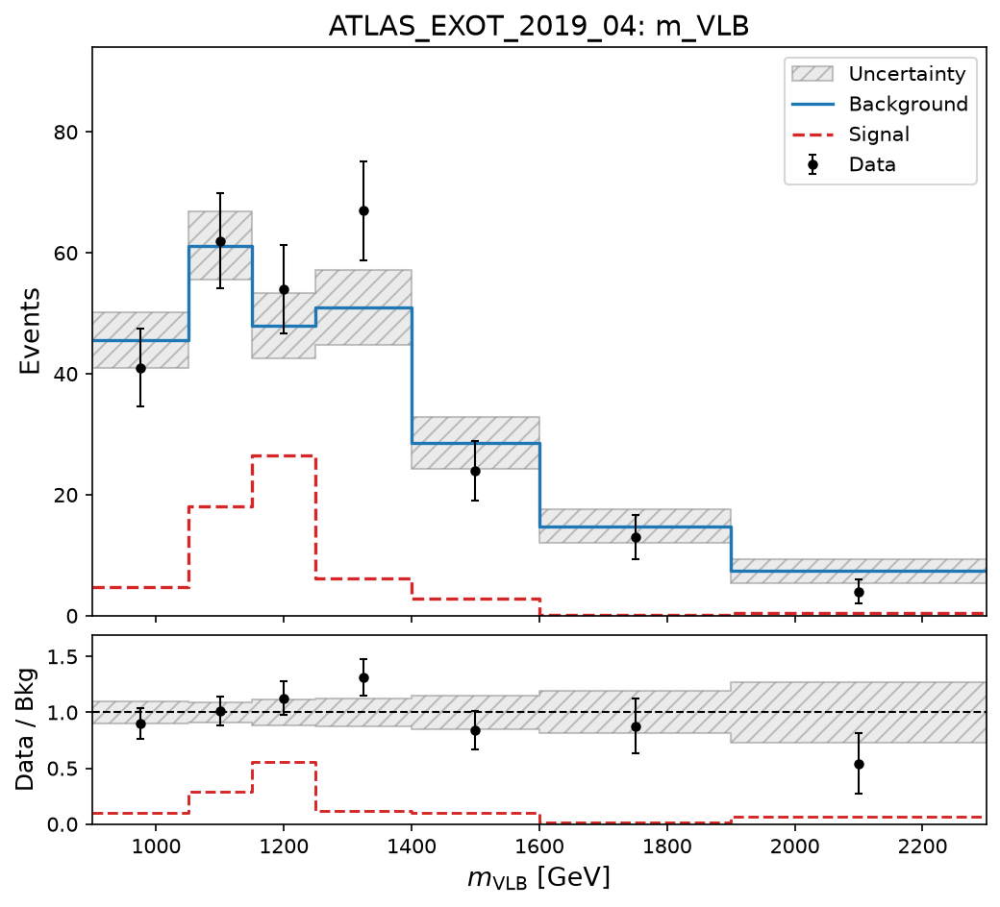

ColliderBit · analysis layer
Histograms
One class does two jobs. Booked one way it is a diagnostic object that reaches the JSON output and the plotter and stops. Booked the other way every bin becomes a signal region that enters the likelihood. The difference is whether one vector is empty — and a single YAML flag, defaulting to off, gates both.
contextThis page expands slide 7 of the CBS change-ledger deck ↗. The JSON fields it produces are part of the output contract ↗, and the batch merge reads them back.
01 · one class, two jobs
The fork is an empty vector
There is no HistogramSR type. The same object behaves differently depending on how it was booked.
| Member | Type | Present when | What it holds |
|---|---|---|---|
name | std::string | always | |
x_label | std::string | always | |
edges | std::vector<double> | always | N+1 bin edges for N bins (monotonically increasing) |
counts | std::vector<double> | always | N bin contents (sum of weights) |
sumw2 | std::vector<double> | always | N sum-of-weights-squared per bin |
obs | std::vector<double> | signal region only | Optional observed counts per bin |
bkg | std::vector<double> | signal region only | Optional background central values per bin |
bkg_err | std::vector<double> | signal region only | Optional background errors per bin |
underflow | double | always | |
overflow | double | always | |
underflow_sumw2 | double | always | |
overflow_sumw2 | double | always |
Three members carry the whole distinction: obs, bkg and bkg_err. is_signal_region() is literally return !obs.empty(); at Histogram.hpp:213. Everything else — the bins, the weights, the under- and overflow accounting — is identical in both modes, which is why one class is enough and why the plain mode costs nothing to keep.
02 · the promotion
How a bin becomes a signal region
to_signal_regions(), quoted from source.
Histogram.hpp:226
226 std::vector<SignalRegionData> to_signal_regions() const
227 {
228 std::vector<SignalRegionData> srs;
229 if (!is_signal_region()) return srs;
230
231 validate_signal_region_data();
232 srs.reserve(nbins());
233 for (size_t i = 0; i < nbins(); ++i)
234 {
235 SignalRegionData sr(
236 name + "_bin" + std::to_string(i),
237 obs[i],
238 counts[i],
239 bkg[i],
240 0.0,
241 bkg_err[i]);
242 sr.n_sig_MC_stat = std::sqrt(sumw2[i]);
243 srs.push_back(sr);
244 }
245 return srs;
246 }
247 Each bin becomes one SignalRegionData named <histogram>_bin<i>, carrying that bin's observed count, its own content as the signal prediction, and the published background with its error. The MC statistical error is sqrt(sumw2) — so the histogram's weight bookkeeping is not decoration, it is what makes the per-bin likelihood honest about limited MC.
Two guards make this safe rather than merely convenient. validate_signal_region_data() refuses a histogram whose obs/bkg/bkg_err lengths do not match the bin count, and it runs on every promotion, not just at construction. combine() refuses to merge two histograms whose signal-region data disagree. Both throw rather than silently producing a shorter or mismatched set of signal regions — which matters because these objects are merged across batch subprocesses.
the length guard · Histogram.hpp:327
327 void validate_signal_region_data() const
328 {
329 if (obs.empty() && bkg.empty() && bkg_err.empty()) return;
330 if (obs.size() != nbins() || bkg.size() != nbins() || bkg_err.size() != nbins())
331 {
332 throw std::runtime_error(
333 "Histogram1D '" + name + "' signal-region data must have one obs/bkg/bkg_err value per bin.");
334 }
335 }03 · the macro surface
What an analysis actually writes
Extracted from AnalysisMacros.hpp, with the expansion each one produces.
| Macro | Arguments | Expands to |
|---|---|---|
COMMIT_HISTOGRAMS | | add_histograms(_histograms); |
COMMIT_HISTOGRAM_SRS | NAME | for (const SignalRegionData& _sr : _histograms.h1d(NAME).to_signal_regions()) { add_result(_sr); } |
DEFINE_HISTOGRAM_1D | NAME, EDGES, ... | _histograms.addHistogram(Histogram1D(NAME, EDGES, ##__VA_ARGS__)); |
DEFINE_HISTOGRAM_SR_1D | NAME, EDGES, OBS, BKG, BKG_ERR, ... | _histograms.addHistogram(Histogram1D(NAME, EDGES, OBS, BKG, BKG_ERR, ##__VA_ARGS__)); |
DEFINE_HISTOGRAM_1D_UNIFORM | NAME, NBINS, XLO, XHI, ... | _histograms.addHistogram(Histogram1D(NAME, NBINS, XLO, XHI, ##__VA_ARGS__)); |
FILL_HISTOGRAM_1D | NAME, VALUE | if (Histogram1D::check_histogram()) _histograms.h1d(NAME).fill(VALUE, event->weight()); |
DEFINE_HISTOGRAM_2D | NAME, XEDGES, YEDGES, ... | _histograms.addHistogram(Histogram2D(NAME, XEDGES, YEDGES, ##__VA_ARGS__)); |
DEFINE_HISTOGRAM_2D_UNIFORM | NAME, NX, XLO, XHI, NY, YLO, YHI, ... | _histograms.addHistogram(Histogram2D(NAME, NX, XLO, XHI, NY, YLO, YHI, ##__VA_ARGS__)); |
FILL_HISTOGRAM_2D | NAME, XVAL, YVAL | if (Histogram1D::check_histogram()) _histograms.h2d(NAME).fill(XVAL, YVAL, event->weight()); |
The pairing is deliberate: DEFINE_HISTOGRAM_1D and DEFINE_HISTOGRAM_SR_1D differ only by the three data arrays, and COMMIT_HISTOGRAMS and COMMIT_HISTOGRAM_SRS are separate calls. An analysis that wants plots but not extra signal regions commits the first and not the second — the two decisions never get accidentally coupled at the analysis level. They are coupled at the flag level instead, which is the next section.
04 · worked example
The same three stages, side by side
Both analyses book, fill and commit. Quoted from source — the only difference is in the first and third.
plain histogram ATLAS_EXOT_2021_35
Book — bin count, range, axis label. Nothing else.
116 if (Histogram1D::check_histogram())
117 {
118 DEFINE_HISTOGRAM_1D_UNIFORM("mVLQlep_sr1", 10, 0., 2000., "m_{VLQ}^{lep} [GeV]")
119 DEFINE_HISTOGRAM_1D_UNIFORM("mVLQlep_sr2", 10, 0., 2000., "m_{VLQ}^{lep} [GeV]")
120 }
Fill — identical on both sides.
263
264 if (sr1) FILL_HISTOGRAM_1D("mVLQlep_sr1", p4VLQlep.m())
265 if (sr2) FILL_HISTOGRAM_1D("mVLQlep_sr2", p4VLQlep.m())
Commit — COMMIT_HISTOGRAMS only. The signal regions above it are cut-and-count and the histogram does not touch them.
273 collect_results()
274 {
275 COMMIT_SIGNAL_REGION("SR1", 156, 150, 10)
276 COMMIT_SIGNAL_REGION("SR2", 186, 192, 12)
277
278 if (Histogram1D::check_histogram()) COMMIT_HISTOGRAMS;
279 return;
280 }
Result: 2 signal regions with the flag on or off, plus two histograms in the JSON for whoever wants to look at the shape.
signal-region histogram ATLAS_EXOT_2019_04
Book — the same call plus three arrays read off the paper: observed, background, background error, one entry per bin.
53 const std::vector<double> mVLB_bins = {900, 1050, 1150, 1250, 1400, 1600, 1900, 2300};
54 const std::vector<double> mVLB_obs = {41.0, 62, 54., 67., 24., 13., 4.};
55 const std::vector<double> mVLB_bkg = {45.5, 61.2, 47.9, 51.0, 28.5, 14.8, 7.4};
56 const std::vector<double> mVLB_bkg_err = {4.6, 5.6, 5.4, 6.2, 4.3, 2.8, 2.0};
57 DEFINE_HISTOGRAM_SR_1D("m_VLB", mVLB_bins, mVLB_obs, mVLB_bkg, mVLB_bkg_err, "$m_{\\rm VLB}$ [GeV]")
58 }
59 set_analysis_name("ATLAS_EXOT_2019_04");
Fill — identical to the left.
310
311 FILL_HISTOGRAM_1D("m_VLB", best.mB)
312
Commit — one extra line. COMMIT_HISTOGRAM_SRS is what promotes the bins.
316 virtual void collect_results()
317 {
318 COMMIT_SIGNAL_REGION("SR", 262, 260, 17)
319 if (Histogram1D::check_histogram())
320 {
321 COMMIT_HISTOGRAMS;
322 COMMIT_HISTOGRAM_SRS("m_VLB");
323 }
Result: 1 signal region with the flag off, 8 with it on — SR plus m_VLB_bin0 … m_VLB_bin6.
Line for line, the difference is three arrays at booking and one macro at commit. Everything between them — the fill, the event loop, the reset — is the same code. That is what makes the two modes cheap to hold in one class, and it is also why the distinction is easy to miss when reading an analysis quickly: a histogram that silently adds seven signal regions looks almost exactly like one that adds none.
The three arrays are the real content. mVLB_obs, mVLB_bkg and mVLB_bkg_err are the published numbers, and validate_signal_region_data() insists there be exactly one of each per bin — so a bin-edge edit that forgets to update the arrays throws instead of quietly producing a shorter set of regions.
05 · what comes out
The JSON, and the plot made from it
A committed run of ATLAS_EXOT_2019_04 at 30,000 events, and the figure the plotting script makes from it.
The JSON block — runs/CBS_result.json, first two bins in full.
{
"name": "m_VLB",
"x_label": "$m_{\\rm VLB}$ [GeV]",
"edges": [
900.0,
1050.0,
1150.0,
1250.0,
1400.0,
1600.0,
1900.0,
2300.0
],
"nbins": 7,
"is_signal_region": true,
"obs": [
41.0,
62.0,
54.0,
67.0,
24.0,
13.0,
4.0
],
"bkg": [
45.5,
61.2,
47.9,
51.0,
28.5,
14.8,
7.4
],
"bkg_err": [
4.6,
5.6,
5.4,
6.2,
4.3,
2.8,
2.0
],
"bins": [
{
"bin_index": 0,
"count": 4.676238000000001,
"error": 0.8999424226982525,
"n_bkg": 45.5,
"n_bkg_err": 4.6,
"n_obs": 41.0,
"sr_label": "m_VLB_bin0",
"sumw2": 0.8098963641720002,
"x_high": 1050.0,
"x_low": 900.0
},
{
"bin_index": 1,
"count": 18.012176000000004,
"error": 1.7662391712743777,
"n_bkg": 61.2,
"n_bkg_err": 5.6,
"n_obs": 62.0,
"sr_label": "m_VLB_bin1",
"sumw2": 3.1196008101440005,
"x_high": 1150.0,
"x_low": 1050.0
},
"... 5 more bins, same shape ..."
],
"underflow": 0.17319400000000001,
"overflow": 0.17319400000000001,
"underflow_error": 0.17319400000000001,
"overflow_error": 0.17319400000000001,
"integral": 58.88596000000001
}
The plot — produced by plot_cbs_histograms.py from exactly that block.

bins[2].count in the block on the left.| Per-bin key | Present when | What it is |
|---|---|---|
bin_index, x_low, x_high | always | Position. Edges are also repeated at the top level as edges, so a reader can take either. |
count, error, sumw2 | always | The simulated yield, its MC error and the raw sum of squared weights. error is sqrt(sumw2), written out so a consumer need not recompute it. |
n_obs, n_bkg, n_bkg_err | SR mode only | The published numbers for that bin, carried per bin as well as in the top-level arrays. |
sr_label | SR mode only | The signal-region name this bin becomes — m_VLB_bin0. It is the join key between the histogram block and the signal_regions block of the same JSON. |
is_signal_region is written into the JSON, so a consumer does not have to infer the mode from whether obs happens to be present. That is also what the plotting script branches on: a plain histogram gets a single panel with counts and error bars, an SR histogram gets the background step, the hatched uncertainty band, the dashed signal overlay and the data-over-background ratio panel underneath. Same script, same JSON, two layouts — the same fork as in the C++.
runs/CBS_result.json, and the image was regenerated from that file with the plotting script so the two match. They are shown to make the shape concrete, not as a physics result — a single run at this statistics says nothing about whether the analysis reproduces the paper.06 · who uses which
Two analyses take the signal regions, one does not
All three are new on this branch.
| Analysis | Mode | Histogram | Bins | Signal regions |
|---|---|---|---|---|
ATLAS_EXOT_2019_04 | signal region | m_VLB | 7 | 1 → 8flag off → on |
ATLAS_EXOT_2019_07 | signal region | m_JJ | 16 | 1 → 17flag off → on |
ATLAS_EXOT_2021_35 | plain | mVLQlep_sr1, mVLQlep_sr2 | — | 2unaffected by the flag |
The split is real, not incidental. ATLAS_EXOT_2019_07 books its histogram with observed and background arrays taken from the paper and commits every bin, so its signal-region count moves from 1 to 17. ATLAS_EXOT_2021_35 books plain uniform histograms, calls COMMIT_HISTOGRAMS and never calls COMMIT_HISTOGRAM_SRS — its signal regions stay the 2 cut-and-count ones and the histograms are there to be looked at. Both are legitimate uses of the same class, and the source makes which one is in play readable at a glance.
The reason this mechanism exists is still in the source, commented out. ATLAS_EXOT_2019_07 carries 16 dead lines at L313–328, each one a hand-written add_result(SignalRegionData(...)) for a single mJJ bin with its observed count and background pasted in as literals. That is what per-bin signal regions cost before: one counter per bin, one line per bin, and the same numbers repeated in two places that could drift apart. COMMIT_HISTOGRAM_SRS replaces all 16 with one call reading the same arrays the histogram is booked from, so the bin edges, the observed counts and the backgrounds cannot disagree with the plot. Leaving the old block visible is the honest choice — it is the before-and-after, in one file.
07 · the flag
A diagnostic switch that moves the likelihood
One YAML key, read once, set globally.
solo.cpp:179
178 // Runtime histogram switch for CBS. 179 const bool check_histogram = settings.getValueOrDef<bool>(false, "check_histogram"); 180 ColliderBit::Histogram1D::set_check_histogram(check_histogram);
check_histogram is read with getValueOrDef and defaults to false, then set on a static that every analysis reads. It gates three things at once: whether histograms are booked, whether FILL_HISTOGRAM_* does anything, and whether COMMIT_HISTOGRAM_SRS runs.
ATLAS_EXOT_2019_04 goes from 1 to 8; ATLAS_EXOT_2019_07 goes from 1 to 17. That is 23 extra signal regions in total. A flag named like a diagnostic toggle changes the likelihood, and because it defaults to off, the histogram-derived regions are absent unless someone opts in. Neither behaviour is wrong, but the name does not warn anyone, and two runs of the same YAML with the flag flipped are not comparable.08 · the round trip
Out to JSON, back through the batch merge
Histograms are not write-only: batch mode reads them back and accumulates them.
| JSON key | Line |
|---|---|
name | 157 |
x_label | 158 |
edges | 159 |
nbins | 160 |
is_signal_region | 161 |
obs | 164 |
bkg | 165 |
bkg_err | 166 |
bin_index | 173 |
x_low | 174 |
x_high | 175 |
count | 176 |
error | 177 |
sumw2 | 178 |
n_obs | 181 |
n_bkg | 182 |
n_bkg_err | 183 |
sr_label | 184 |
bins | 188 |
underflow | 189 |
overflow | 190 |
underflow_error | 191 |
overflow_error | 192 |
integral | 193 |
y_label | 205 |
x_edges | 206 |
y_edges | 207 |
nx_bins | 208 |
ny_bins | 209 |
counts | 227 |
errors | 228 |
overflow_total | 230 |
| Batch step | Line | What it does |
|---|---|---|
parse_histograms_or_empty | 584 | Rebuilds Histograms from a per-file JSON, or returns empty if the key is absent. |
scale(process_weight) | 834 | Applies the cross-section weight before merging, so each subprocess contributes in proportion. |
accumulate_histograms | 677 | Adds bin contents and sumw2 across files. |
| count guard | 694 | Throws if two files disagree on how many histograms an analysis has. |
Because the batch merge reads these fields back, the histogram block is part of the wire format between subprocesses and the merge step — not just a report. Renaming edges, counts or sumw2 breaks batch mode, not merely the plotting script. The same is true of the cutflow and signal-region blocks, and the output-contract page covers which fields are load-bearing in that sense.
09 · the footprint
Where it landed
| File | State | Role | Lines |
|---|---|---|---|
Histogram.hpp | new file | the class itself: Histogram1D, Histogram2D, and the Histograms container | +678 −0 |
AnalysisMacros.hpp | modified | the booking, filling and committing macros | +55 −0 |
Analysis.hpp | modified | _histograms member and add_histograms | +14 −0 |
AnalysisData.hpp | modified | carries the histograms alongside the signal regions | +10 −2 |
solo.cpp | modified | reads check_histogram from YAML and sets the global switch | +291 −139 |
solo_output.cpp | new file | serialises histograms into the run JSON | +689 −0 |
solo_batch.cpp | new file | parses them back, scales by process weight, accumulates across files | +1171 −0 |
plot_cbs_histograms.py | new file | renders the JSON histograms | +288 −0 |
| total | 8 files | +3196 −141 |
One new header carries the whole feature; everything else is a small edit at a seam that already existed — the analysis base class, the data container, the output writer, the batch merge. The plotting script (288 lines) is the only other new file and it reads the JSON rather than linking against anything.
10 · boundary
What this page does not tell you
ATLAS_EXOT_2021_35 is in any case marked unvalidated in its own source.backReturn to slide 7 ↗, or to the start of the deck ↗.